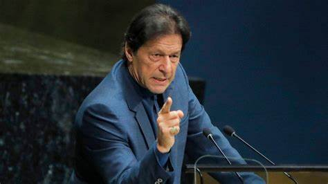

IMRAN KHAN NIAZI
THE MAN WHO IS HOPE FOR BILLION OF PEOPLE

Imran Khan at UNITED NATIONS while delivering speech
Here is the timeline of Imran Khan's life
- 1952 - Imran Khan, born on October 5, 1952, in Lahore, Pakistan.
- 1971 -Khan played his first match for Pakistan’s national team.
- 1976 -Gradute from Oxford University
- 1980 -Khan had distinguished himself as an exceptional bowler and all-rounder.
- 1982 -He was named as a captain of the Pakistani team.
- 1992 -In 1992 Khan achieved his greatest athletic success when he led the Pakistani team to its first World Cup title, defeating England in the final. He retired that same year, having secured a reputation as one of the greatest cricket players in history.
- 1994 -Khan acted as the primary fund-raiser for the Shaukat Khanum Memorial Cancer Hospital, a specialized cancer hospital in Lahore, which opened in 1994. The hospital was named after Khan’s mother, who had died of cancer in 1985.
- 1996 -He founded his own political party, Pakistan Tehreek-e-Insaf (Pakistan Justice Movement; PTI), in 1996.
- 2018 -Elections were held the following year, in July 2018. Khan ran on a platform of fighting corruption and poverty, even as he had to fight off accusations that he was too cozy with the military establishment. The PTI won a plurality of seats in the National Assembly, allowing Khan to seek a coalition with independent members of the parliament. He became prime minister on August 18.
- 2022 - Khan became the first prime minister in Pakistan’s history to be removed by a no-confidence measure.
- 2023 -0n 9th May he was taken into custody by dozens of paramilitary officers for lack of cooperation in ongoing corruption investigations. The arrest was dramatic and prompted demonstrations and violence by Khan’s supporters against military installations and government buildings.
- 2023 -In August 2023 Khan was convicted of corrupt practices after a trial court heard the electoral commission’s case against him.